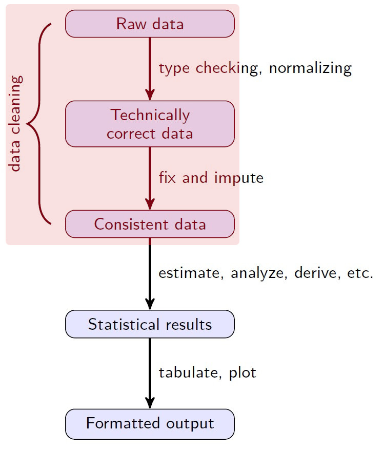
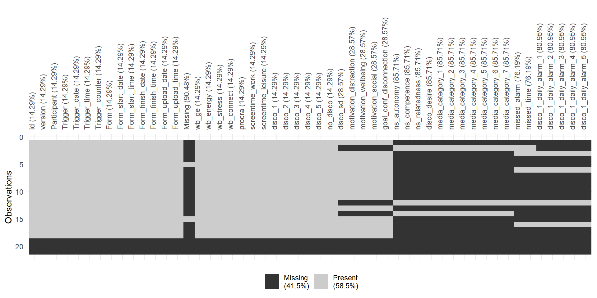
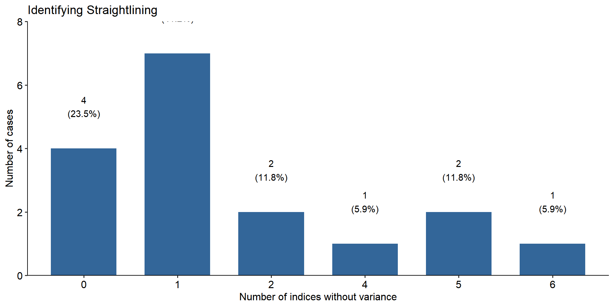

Projektseminar
Datenaufbereitung I
Julius Klingelhoefer
2022-11-08
Housekeeping
🧹
Neuerungen
Mehr Abwechslung und Interaktivität: R-Übungselemte schon in den Vortrag:
Kleinere Arbeitsphasen während des Vortrags
Überarbeitungen aus der Sitzung sind Grundlage für die anschließenden Arbeitsaufträge
Prä-Registrierung(en): Jetzt verfügbar, s. Teams!
RStudio Server
Weiterhin Nutzung des RStudio Servers möglich (außer Mittwochs) Erreichbar unter: http://131.188.248.179:8787
nur via VPN erreichbar
Bitte nutzen Sie Ihren (alten) persönlichen Login
Zwischenberichtsfeedback
- Fragen/Unklarheiten zum Zwischenbericht(-sfeedback)?
Sharepics
Start der Erhebung am 14.11.
Für uns ebenfalls?
Datenaufbereitung
Von Rohdaten bis zur Analyse
import ➡️ tidy ➡️ transform ➡️ repeat
Prozess der Datenaufbereitung
Die Aufbereitung nimmt in der Regel den Großteil der Zeit in Anspruch
Häufig mehrfache Wiederholung dreier Schritte:
(explorative) Erkundung
Standardisierung
(erneute) Bereinung der Daten

Datenstruktur(en)
Zusammenfügen von Datensätzen
import ➕ bind ➕ join ➕ merge
Stärke von R: Umgang mit Daten
Ein Bereich, in dem R wirklich glänzt, ist die Fähigkeit mit mehreren und verschiedenen Datenquellen (gleichzeitig) zu arbeiten
R verfügt über eine Reihe an Paketen für den Import, die Transformation sowie die Bearbeitung verschiedenster Datenquellen
Datenimport in R
Einer der ersten Arbeitschritte ist der Import externer Daten in R. Dafür gibt es neben der Base R-Funktionen eine Vielzahl an verschiedenen Paketen:
haven- SPSS, Stata, and SAS filesDBI- databasesjsonlite- jsonxml2- XMLhttr- Web APIsrvest- HTML (Web Scraping)readr::read_lines()- text data…
Datenimport in R
- …
Grundsätzlich gilt
Je “einfacher” die Formatierung der Daten, desto weniger komplex ist der Import.
Import von Textdatein (
.csv) i.d.R. einfacher und ohne größere Komplikationen.Andere Dateienformate (
.sav) können Vorzüge haben (z.B. Variable- und Value Labels), die den potentiellen Mehraufwand beim Import rechtfertigen.
Arten der Zusammenführung
Drei grundsätzliche Möglichkeiten, Datensätze zu verbinden:
Addition zusätzlicher Variablen für bestehende Fälle
Addition zusätzlicher Fälle für bestehende Variablen
Addition zuätzlicher Variablen & Fälle
Für alle Möglichkeiten gibt es sowohl simple (z.B. durch die bind_-Funktionen), aber auch komplexere Lösungen (z.B. die _join-Funktionen)1.
bind_cols()
x
A B C
a t 1
b u 2
c v 3
y
E F G
a t 3
b u 2
d w 1
bind_cols()
x & y
A B C E F G
a t 1 a t 3
b u 2 b u 2
c v 3 d w 1
Um Variablen zu kombinieren
z.B. Pre- und post-exposure Messungen bei einem Experiment.
bind_rows()
x
ID B C
a t 1
b u 2
y
ID B D
c v 3
d w 4
bind_rows()
x & y
_ ID B C
_ a t 1
_ b u 2
_ c v 3
_ d w 4
“Komplexeres” zusammenfügen
Neben “Anhängen” gibt es “intelligentere“ Varianten, Datensätze zusammenzuführen,
z.B. durch einen gemeinsamen Schlüssel
= Variable, die Fälle in einem Datensatz mit einem anderen verbindet
Meist existiert dafür eine ID-Variable
z.B. für jede/n Teilnehmer*in in jedem Datensatz.
Möglichkeiten der Verknüpfung unterscheiden sich bezüglich des Umgangs mit unterschiedlichen Werten im gemeinsamen Schlüssel
Varianten:
Left Join
Right Join
Inner Join
Full Join
Übersicht

Source: Db-01_2119.png (1421×1034) (n.d.)
left_join()
x
ID B C
a t 1
b u 2
c v 3
y
ID B D
a t 3
b u 2
d w 1
left_join()
x & y
ID B C D
a t 1 3
b u 2 2
c v 3
left_join()
x & y
ID B C D
a t 1 3
b u 2 2
c v 3 NA
Erhält alle einzigartigen Fälle (ID) des linken/ersten Datensatzes
Nicht die einzigartigen Fälle des rechten Datensatzes
Fehlende Variablen werden zu NAs
right_join()
x
ID B C
a t 1
b u 2
c v 3
y
ID B D
a t 3
b u 2
d w 1
right_join()
x & y
ID B C D
a t 1 3
b u 2 2
d w NA 1
- Identisch zu
left_join, nur “rechts”
inner_join()
x
ID B C
a t 1
b u 2
c v 3
y
ID B D
a t 3
b u 2
d w 1
inner_join()
x & y
ID B C D
a t 1 3
b u 2 2
- Es werden nur IDs behalten, die in beiden Datensätzen existieren
full_join()
x
ID B C
a t 1
b u 2
c v 3
y
ID B D
a t 3
b u 2
d w 1
full_join()
x & y
ID B C D
a t 1 3
b u 2 2
c v 3 NA
d w NA 1
- Alle Werte und Reihen werden erhalten
Aufgabe 1
Lesen Sie die zwei Datensätze aus dem Pretest aus dem Ordner
dataein:Momentary_Disco!+NO+LOGGING_20221020T113348+0200.xlsxmomentary_disco_WITH_logging_20221020T113642+0200.xlsxa) Welche Funktion nutzen Sie zum einlesen?
Vereinheitlichen Sie die Variablennamen mit
janitor::clean_names()Verbinden Sie die beiden Datensätze
- a) Welche Funktion nutzen Sie und wieso?
Untersuchen Sie Variablen der Datensätze mit
glimpse()mitsjmisc::frq()- a) Was stellen Sie fest?
Lösung 1
⚠️ Erst nach der Bearbeitung weiterklicken! ⚠️
Einlesen
# Importing data from the version **without** logging
d_log_f = read_excel("../../pretest/data/Momentary_Disco!+NO+LOGGING_20221020T113348+0200.xlsx")
# Importing data from the version **with** logging
d_log_t = read_excel("../../pretest/data/momentary_disco_WITH_logging_20221020T113642+0200.xlsx")
colnames(d_log_t) [1] "Participant"
[2] "Trigger"
[3] "Trigger_date"
[4] "Trigger_time"
[5] "Trigger_counter"
[6] "Form"
[7] "Form_start_date"
[8] "Form_start_time"
[9] "Form_finish_date"
[10] "Form_finish_time"
[11] "Form_upload_date"
[12] "Form_upload_time"
[13] "Missing"
[14] "text_0"
[15] "blank_1"
[16] "text_1"
[17] "wb_ge"
[18] "text_2"
[19] "wb_energy"
[20] "wb_stress"
[21] "wb_connect"
[22] "procra"
[23] "item_863"
[24] "screentime_work"
[25] "screentime_leisure"
[26] "disco_1"
[27] "disco_2"
[28] "disco_3"
[29] "disco_4"
[30] "disco_5"
[31] "disco_6"
[32] "item_607"
[33] "disco_sd"
[34] "item_895"
[35] "motivation_distraction"
[36] "motivation_wellbeing"
[37] "motivation_social"
[38] "goal_conf_disconnection"
[39] "text_3"
[40] "ns_autonomy"
[41] "ns_competence"
[42] "ns_relatedness"
[43] "item_1403"
[44] "disco_desire"
[45] "media_category_1"
[46] "media_category_2"
[47] "media_category_3"
[48] "media_category_4"
[49] "media_category_5"
[50] "media_category_6"
[51] "media_category_7"
[52] "text_6"
[53] "item_902"
[54] "item_910"
[55] "item_969"
[56] "wb_ge_1"
[57] "item_1057"
[58] "wb_energy_1"
[59] "wb_stress_1"
[60] "wb_connect_1"
[61] "procra_1"
[62] "item_986"
[63] "screentime_work_1"
[64] "screentime_leisure_1"
[65] "disco_1_1"
[66] "disco_1_2"
[67] "disco_1_3"
[68] "disco_1_4"
[69] "disco_1_5"
[70] "disco_1_6"
[71] "item_1114"
[72] "disco_sd_1"
[73] "item_1114_copy1233"
[74] "motivation_distraction_1"
[75] "motivation_wellbeing_1"
[76] "motivation_social_1"
[77] "goal_conf_disconnection_1"
[78] "item_1114_copy1233_copy1413"
[79] "ns_autonomy_1"
[80] "ns_competence_1"
[81] "ns_relatedness_1"
[82] "item_1478"
[83] "disco_desire_1"
[84] "media_category_1_1"
[85] "media_category_1_2"
[86] "media_category_1_3"
[87] "media_category_1_4"
[88] "media_category_1_5"
[89] "media_category_1_6"
[90] "media_category_1_7"
[91] "item_738"
[92] "item_1383"
[93] "item_753"
[94] "item_798"
[95] "missed_alarm"
[96] "missed_time"
[97] "disco_1_daily_alarm_1"
[98] "disco_1_daily_alarm_2"
[99] "disco_1_daily_alarm_3"
[100] "disco_1_daily_alarm_4"
[101] "disco_1_daily_alarm_5"
[102] "disco_1_daily_alarm_6"
[103] "disco_1_daily_time_1"
[104] "disco_1_daily_time_2"
[105] "disco_1_daily_time_3"
[106] "disco_1_daily_time_4"
[107] "disco_1_daily_time_5"
[108] "disco_1_daily_time_6"
[109] "item_938_copy1728"
[110] "motivation_distraction_day_copy1729"
[111] "motivation_wellbeing_day_copy1730"
[112] "motivation_social_day_copy1731"
[113] "item_1151"
[114] "item_841_copy852"
[115] "item_841"
[116] "conscientiousness"
[117] "item_1642"
[118] "disco_thoughts"
[119] "item_551"
[120] "final_feedback"
[121] "item_1519_copy1527"
[122] "item_1519"
[123] "item_1366"
[124] "item_1381"
[125] "participation_n"
[126] "item_662"
[127] "item_670"
[128] "item_730"
[129] "item_476"
[130] "item_484"
[131] "item_646"
[132] "item_1019"
[133] "item_617"
[134] "item_633"
[135] "item_638"
[136] "item_708"
[137] "welcome_text"
[138] "welcome_text_copy527"
[139] "welcome_text_copy527_copy735"
[140] "item_1427"
[141] "item_1432"
[142] "welcome_text_copy521"
[143] "welcome_text_copy515"
[144] "item_673"
[145] "feedback"
[146] "feedback_pin"
[147] "item_848_copy856"
[148] "item_848"
[149] "item_868"
[150] "item_879"
[151] "item_673_copy887"
[152] "feedback_copy896"
[153] "item_916"
[154] "item_916_copy931"
[155] "item_1443"
[156] "item_656"
[157] "day_n"
[158] "daily_forms"
[159] "participation_number"
[160] "final_day"
[161] "finished"
[162] "item_768"
[163] "item39424"
[164] "item_792"
[165] "item_810"
[166] "item_820"
[167] "item_820_copy760"
[168] "item985"
[169] "end_of_day_fillout" clean_names()
[1] "Participant"
[2] "Trigger"
[3] "Trigger_date"
[4] "Trigger_time"
[5] "Trigger_counter"
[6] "Form"
[7] "Form_start_date"
[8] "Form_start_time"
[9] "Form_finish_date"
[10] "Form_finish_time"
[11] "Form_upload_date"
[12] "Form_upload_time"
[13] "Missing"
[14] "text_0"
[15] "blank_1"
[16] "text_1"
[17] "wb_ge"
[18] "text_2"
[19] "wb_energy"
[20] "wb_stress"
[21] "wb_connect"
[22] "procra"
[23] "item_863"
[24] "screentime_work"
[25] "screentime_leisure"
[26] "disco_1"
[27] "disco_2"
[28] "disco_3"
[29] "disco_4"
[30] "disco_5"
[31] "disco_6"
[32] "item_607"
[33] "disco_sd"
[34] "item_895"
[35] "motivation_distraction"
[36] "motivation_wellbeing"
[37] "motivation_social"
[38] "goal_conf_disconnection"
[39] "text_3"
[40] "ns_autonomy"
[41] "ns_competence"
[42] "ns_relatedness"
[43] "item_1403"
[44] "disco_desire"
[45] "media_category_1"
[46] "media_category_2"
[47] "media_category_3"
[48] "media_category_4"
[49] "media_category_5"
[50] "media_category_6"
[51] "media_category_7"
[52] "text_6"
[53] "item_902"
[54] "item_910"
[55] "item_969"
[56] "wb_ge_1"
[57] "item_1057"
[58] "wb_energy_1"
[59] "wb_stress_1"
[60] "wb_connect_1"
[61] "procra_1"
[62] "item_986"
[63] "screentime_work_1"
[64] "screentime_leisure_1"
[65] "disco_1_1"
[66] "disco_1_2"
[67] "disco_1_3"
[68] "disco_1_4"
[69] "disco_1_5"
[70] "disco_1_6"
[71] "item_1114"
[72] "disco_sd_1"
[73] "item_1114_copy1233"
[74] "motivation_distraction_1"
[75] "motivation_wellbeing_1"
[76] "motivation_social_1"
[77] "goal_conf_disconnection_1"
[78] "item_1114_copy1233_copy1413"
[79] "ns_autonomy_1"
[80] "ns_competence_1"
[81] "ns_relatedness_1"
[82] "item_1478"
[83] "disco_desire_1"
[84] "media_category_1_1"
[85] "media_category_1_2"
[86] "media_category_1_3"
[87] "media_category_1_4"
[88] "media_category_1_5"
[89] "media_category_1_6"
[90] "media_category_1_7"
[91] "item_738"
[92] "item_1383"
[93] "item_753"
[94] "item_798"
[95] "missed_alarm"
[96] "missed_time"
[97] "disco_1_daily_alarm_1"
[98] "disco_1_daily_alarm_2"
[99] "disco_1_daily_alarm_3"
[100] "disco_1_daily_alarm_4"
[101] "disco_1_daily_alarm_5"
[102] "disco_1_daily_alarm_6"
[103] "disco_1_daily_time_1"
[104] "disco_1_daily_time_2"
[105] "disco_1_daily_time_3"
[106] "disco_1_daily_time_4"
[107] "disco_1_daily_time_5"
[108] "disco_1_daily_time_6"
[109] "item_938_copy1728"
[110] "motivation_distraction_day_copy1729"
[111] "motivation_wellbeing_day_copy1730"
[112] "motivation_social_day_copy1731"
[113] "item_1151"
[114] "item_841_copy852"
[115] "item_841"
[116] "conscientiousness"
[117] "item_1642"
[118] "disco_thoughts"
[119] "item_551"
[120] "final_feedback"
[121] "item_1519_copy1527"
[122] "item_1519"
[123] "item_1366"
[124] "item_1381"
[125] "participation_n"
[126] "item_662"
[127] "item_670"
[128] "item_730"
[129] "item_476"
[130] "item_484"
[131] "item_646"
[132] "item_1019"
[133] "item_617"
[134] "item_633"
[135] "item_638"
[136] "item_708"
[137] "welcome_text"
[138] "welcome_text_copy527"
[139] "welcome_text_copy527_copy735"
[140] "item_1427"
[141] "item_1432"
[142] "welcome_text_copy521"
[143] "welcome_text_copy515"
[144] "item_673"
[145] "feedback"
[146] "feedback_pin"
[147] "item_848_copy856"
[148] "item_848"
[149] "item_868"
[150] "item_879"
[151] "item_673_copy887"
[152] "feedback_copy896"
[153] "item_916"
[154] "item_916_copy931"
[155] "item_1443"
[156] "item_656"
[157] "day_n"
[158] "daily_forms"
[159] "participation_number"
[160] "final_day"
[161] "finished"
[162] "item_768"
[163] "item39424"
[164] "item_792"
[165] "item_810"
[166] "item_820"
[167] "item_820_copy760"
[168] "item985"
[169] "end_of_day_fillout" [1] "participant"
[2] "trigger"
[3] "trigger_date"
[4] "trigger_time"
[5] "trigger_counter"
[6] "form"
[7] "form_start_date"
[8] "form_start_time"
[9] "form_finish_date"
[10] "form_finish_time"
[11] "form_upload_date"
[12] "form_upload_time"
[13] "missing"
[14] "text_0"
[15] "blank_1"
[16] "text_1"
[17] "wb_ge"
[18] "text_2"
[19] "wb_energy"
[20] "wb_stress"
[21] "wb_connect"
[22] "procra"
[23] "item_863"
[24] "screentime_work"
[25] "screentime_leisure"
[26] "disco_1"
[27] "disco_2"
[28] "disco_3"
[29] "disco_4"
[30] "disco_5"
[31] "disco_6"
[32] "item_607"
[33] "disco_sd"
[34] "item_895"
[35] "motivation_distraction"
[36] "motivation_wellbeing"
[37] "motivation_social"
[38] "goal_conf_disconnection"
[39] "text_3"
[40] "ns_autonomy"
[41] "ns_competence"
[42] "ns_relatedness"
[43] "item_1403"
[44] "disco_desire"
[45] "media_category_1"
[46] "media_category_2"
[47] "media_category_3"
[48] "media_category_4"
[49] "media_category_5"
[50] "media_category_6"
[51] "media_category_7"
[52] "text_6"
[53] "item_902"
[54] "item_910"
[55] "item_969"
[56] "wb_ge_1"
[57] "item_1057"
[58] "wb_energy_1"
[59] "wb_stress_1"
[60] "wb_connect_1"
[61] "procra_1"
[62] "item_986"
[63] "screentime_work_1"
[64] "screentime_leisure_1"
[65] "disco_1_1"
[66] "disco_1_2"
[67] "disco_1_3"
[68] "disco_1_4"
[69] "disco_1_5"
[70] "disco_1_6"
[71] "item_1114"
[72] "disco_sd_1"
[73] "item_1114_copy1233"
[74] "motivation_distraction_1"
[75] "motivation_wellbeing_1"
[76] "motivation_social_1"
[77] "goal_conf_disconnection_1"
[78] "item_1114_copy1233_copy1413"
[79] "ns_autonomy_1"
[80] "ns_competence_1"
[81] "ns_relatedness_1"
[82] "item_1478"
[83] "disco_desire_1"
[84] "media_category_1_1"
[85] "media_category_1_2"
[86] "media_category_1_3"
[87] "media_category_1_4"
[88] "media_category_1_5"
[89] "media_category_1_6"
[90] "media_category_1_7"
[91] "item_738"
[92] "item_1383"
[93] "item_753"
[94] "item_798"
[95] "missed_alarm"
[96] "missed_time"
[97] "disco_1_daily_alarm_1"
[98] "disco_1_daily_alarm_2"
[99] "disco_1_daily_alarm_3"
[100] "disco_1_daily_alarm_4"
[101] "disco_1_daily_alarm_5"
[102] "disco_1_daily_alarm_6"
[103] "disco_1_daily_time_1"
[104] "disco_1_daily_time_2"
[105] "disco_1_daily_time_3"
[106] "disco_1_daily_time_4"
[107] "disco_1_daily_time_5"
[108] "disco_1_daily_time_6"
[109] "item_938_copy1728"
[110] "motivation_distraction_day_copy1729"
[111] "motivation_wellbeing_day_copy1730"
[112] "motivation_social_day_copy1731"
[113] "item_1151"
[114] "item_841_copy852"
[115] "item_841"
[116] "conscientiousness"
[117] "item_1642"
[118] "disco_thoughts"
[119] "item_551"
[120] "final_feedback"
[121] "item_1519_copy1527"
[122] "item_1519"
[123] "item_1366"
[124] "item_1381"
[125] "participation_n"
[126] "item_662"
[127] "item_670"
[128] "item_730"
[129] "item_476"
[130] "item_484"
[131] "item_646"
[132] "item_1019"
[133] "item_617"
[134] "item_633"
[135] "item_638"
[136] "item_708"
[137] "welcome_text"
[138] "welcome_text_copy527"
[139] "welcome_text_copy527_copy735"
[140] "item_1427"
[141] "item_1432"
[142] "welcome_text_copy521"
[143] "welcome_text_copy515"
[144] "item_673"
[145] "feedback"
[146] "feedback_pin"
[147] "item_848_copy856"
[148] "item_848"
[149] "item_868"
[150] "item_879"
[151] "item_673_copy887"
[152] "feedback_copy896"
[153] "item_916"
[154] "item_916_copy931"
[155] "item_1443"
[156] "item_656"
[157] "day_n"
[158] "daily_forms"
[159] "participation_number"
[160] "final_day"
[161] "finished"
[162] "item_768"
[163] "item39424"
[164] "item_792"
[165] "item_810"
[166] "item_820"
[167] "item_820_copy760"
[168] "item985"
[169] "end_of_day_fillout" Adding rows
Participant Trigger Trigger_date
Min. : 1.00 Length:103 Min. :2022-09-27 19:39:17.00
1st Qu.:128.00 Class :character 1st Qu.:2022-10-02 14:27:13.00
Median :128.00 Mode :character Median :2022-10-06 16:12:13.00
Mean : 98.47 Mean :2022-10-07 05:36:22.07
3rd Qu.:128.00 3rd Qu.:2022-10-10 20:25:11.00
Max. :128.00 Max. :2022-10-18 15:17:42.00
Trigger_time Trigger_counter Form
Min. :2022-09-27 19:39:17.00 Min. : 1.00 Length:103
1st Qu.:2022-10-02 14:27:13.00 1st Qu.:10.50 Class :character
Median :2022-10-06 16:12:13.00 Median :29.00 Mode :character
Mean :2022-10-07 05:36:22.07 Mean :33.17
3rd Qu.:2022-10-10 20:25:11.00 3rd Qu.:54.50
Max. :2022-10-18 15:17:42.00 Max. :78.00
Form_start_date Form_start_time
Min. :2022-09-27 19:39:26.00 Min. :2022-09-27 19:39:26.00
1st Qu.:2022-10-02 14:42:20.50 1st Qu.:2022-10-02 14:42:20.50
Median :2022-10-06 16:24:46.00 Median :2022-10-06 16:24:46.00
Mean :2022-10-07 05:46:58.92 Mean :2022-10-07 05:46:58.92
3rd Qu.:2022-10-10 20:29:35.50 3rd Qu.:2022-10-10 20:29:35.50
Max. :2022-10-18 15:23:49.00 Max. :2022-10-18 15:23:49.00
Form_finish_date Form_finish_time
Min. :2022-09-27 19:39:52.00 Min. :2022-09-27 19:39:52.00
1st Qu.:2022-10-02 14:42:25.00 1st Qu.:2022-10-02 14:42:25.00
Median :2022-10-06 16:26:04.00 Median :2022-10-06 16:26:04.00
Mean :2022-10-07 05:47:46.71 Mean :2022-10-07 05:47:46.71
3rd Qu.:2022-10-10 20:31:34.50 3rd Qu.:2022-10-10 20:31:34.50
Max. :2022-10-18 15:23:49.00 Max. :2022-10-18 15:23:49.00
Form_upload_date Form_upload_time
Min. :2022-09-27 19:39:55.00 Min. :2022-09-27 19:39:55.00
1st Qu.:2022-10-02 15:45:54.00 1st Qu.:2022-10-02 15:45:54.00
Median :2022-10-06 17:26:07.00 Median :2022-10-06 17:26:07.00
Mean :2022-10-07 09:04:45.86 Mean :2022-10-07 09:04:45.86
3rd Qu.:2022-10-10 20:32:03.00 3rd Qu.:2022-10-10 20:32:03.00
Max. :2022-10-18 17:22:58.00 Max. :2022-10-18 17:22:58.00
Missing text_0 blank_1 text_1
Length:103 Mode:logical Mode:logical Mode:logical
Class :character NA's:103 NA's:103 NA's:103
Mode :character
wb_ge text_2 wb_energy wb_stress wb_connect
Min. :2.000 Mode:logical Min. :1.000 Min. :1.000 Min. :3.000
1st Qu.:5.000 NA's:103 1st Qu.:3.000 1st Qu.:2.000 1st Qu.:4.000
Median :5.000 Median :4.000 Median :2.500 Median :5.000
Mean :5.294 Mean :4.029 Mean :2.853 Mean :4.765
3rd Qu.:6.000 3rd Qu.:5.000 3rd Qu.:3.000 3rd Qu.:5.000
Max. :7.000 Max. :7.000 Max. :7.000 Max. :7.000
NA's :69 NA's :69 NA's :69 NA's :69
procra item_863 screentime_work screentime_leisure
Min. :1.000 Mode:logical Min. : 0.00 Min. : 0.00
1st Qu.:1.000 NA's:103 1st Qu.: 0.00 1st Qu.:16.25
Median :1.000 Median : 0.00 Median :30.00
Mean :2.029 Mean : 16.21 Mean :28.65
3rd Qu.:2.750 3rd Qu.: 27.50 3rd Qu.:30.00
Max. :7.000 Max. :102.00 Max. :92.00
NA's :69 NA's :69 NA's :69
disco_1 disco_2 disco_3 disco_4
Min. :0.0000 Min. :0.0000 Min. :0.0000 Min. :0.0000
1st Qu.:0.0000 1st Qu.:0.0000 1st Qu.:0.0000 1st Qu.:0.0000
Median :0.0000 Median :0.0000 Median :0.0000 Median :0.0000
Mean :0.2059 Mean :0.3235 Mean :0.2353 Mean :0.3824
3rd Qu.:0.0000 3rd Qu.:1.0000 3rd Qu.:0.0000 3rd Qu.:1.0000
Max. :1.0000 Max. :1.0000 Max. :1.0000 Max. :1.0000
NA's :69 NA's :69 NA's :69 NA's :69
disco_5 disco_6 item_607 disco_sd
Min. :0.0000 Min. :0.0000 Mode:logical Min. :1.000
1st Qu.:0.0000 1st Qu.:0.0000 NA's:103 1st Qu.:5.000
Median :0.0000 Median :0.0000 Median :5.000
Mean :0.4118 Mean :0.3824 Mean :5.238
3rd Qu.:1.0000 3rd Qu.:1.0000 3rd Qu.:6.000
Max. :1.0000 Max. :1.0000 Max. :7.000
NA's :69 NA's :69 NA's :82
item_895 motivation_distraction motivation_wellbeing motivation_social
Mode:logical Min. :1.000 Min. :1.00 Min. :1.0
NA's:103 1st Qu.:2.000 1st Qu.:2.00 1st Qu.:4.0
Median :5.000 Median :6.00 Median :5.5
Mean :4.048 Mean :4.45 Mean :5.0
3rd Qu.:6.000 3rd Qu.:6.00 3rd Qu.:6.0
Max. :7.000 Max. :7.00 Max. :7.0
NA's :82 NA's :83 NA's :83
goal_conf_disconnection text_3 ns_autonomy ns_competence
Min. :1.00 Mode:logical Min. :4.000 Min. :3.000
1st Qu.:2.00 NA's:103 1st Qu.:5.000 1st Qu.:5.000
Median :3.00 Median :5.000 Median :5.000
Mean :3.65 Mean :5.077 Mean :5.154
3rd Qu.:5.25 3rd Qu.:5.000 3rd Qu.:6.000
Max. :7.00 Max. :7.000 Max. :7.000
NA's :83 NA's :90 NA's :90
ns_relatedness item_1403 disco_desire media_category_1
Min. :3.000 Mode:logical Min. :1.000 Min. :0.0000
1st Qu.:5.000 NA's:103 1st Qu.:1.000 1st Qu.:0.0000
Median :5.000 Median :2.000 Median :1.0000
Mean :5.231 Mean :2.308 Mean :0.6923
3rd Qu.:6.000 3rd Qu.:3.000 3rd Qu.:1.0000
Max. :7.000 Max. :7.000 Max. :1.0000
NA's :90 NA's :90 NA's :90
media_category_2 media_category_3 media_category_4 media_category_5
Min. :0.0000 Min. :0.0000 Min. :0 Min. :0
1st Qu.:0.0000 1st Qu.:0.0000 1st Qu.:0 1st Qu.:0
Median :0.0000 Median :1.0000 Median :0 Median :0
Mean :0.3846 Mean :0.6154 Mean :0 Mean :0
3rd Qu.:1.0000 3rd Qu.:1.0000 3rd Qu.:0 3rd Qu.:0
Max. :1.0000 Max. :1.0000 Max. :0 Max. :0
NA's :90 NA's :90 NA's :90 NA's :90
media_category_6 media_category_7 text_6 item_902 item_910
Min. :0.0000 Min. :0.0000 Mode:logical Mode:logical Mode:logical
1st Qu.:0.0000 1st Qu.:0.0000 NA's:103 NA's:103 NA's:103
Median :1.0000 Median :0.0000
Mean :0.5385 Mean :0.1538
3rd Qu.:1.0000 3rd Qu.:0.0000
Max. :1.0000 Max. :1.0000
NA's :90 NA's :90
item_969 wb_ge_1 item_1057 wb_energy_1 wb_stress_1
Mode:logical Min. :3.000 Mode:logical Min. :1.000 Min. :1.000
NA's:103 1st Qu.:5.000 NA's:103 1st Qu.:2.000 1st Qu.:2.000
Median :6.000 Median :3.000 Median :2.000
Mean :5.538 Mean :3.385 Mean :2.077
3rd Qu.:7.000 3rd Qu.:5.000 3rd Qu.:2.000
Max. :7.000 Max. :6.000 Max. :3.000
NA's :90 NA's :90 NA's :90
wb_connect_1 procra_1 item_986 screentime_work_1
Min. :2.000 Min. :1.000 Mode:logical Min. : 0.00
1st Qu.:5.000 1st Qu.:1.000 NA's:103 1st Qu.: 0.00
Median :5.000 Median :1.000 Median : 0.00
Mean :5.154 Mean :1.154 Mean : 16.92
3rd Qu.:6.000 3rd Qu.:1.000 3rd Qu.: 0.00
Max. :7.000 Max. :3.000 Max. :120.00
NA's :90 NA's :90 NA's :90
screentime_leisure_1 disco_1_1 disco_1_2 disco_1_3
Min. : 0.00 Min. :0.0000 Min. :0.0000 Min. :0.0000
1st Qu.: 0.00 1st Qu.:0.0000 1st Qu.:1.0000 1st Qu.:0.0000
Median : 0.00 Median :1.0000 Median :1.0000 Median :1.0000
Mean : 16.15 Mean :0.5385 Mean :0.7692 Mean :0.6154
3rd Qu.: 20.00 3rd Qu.:1.0000 3rd Qu.:1.0000 3rd Qu.:1.0000
Max. :100.00 Max. :1.0000 Max. :1.0000 Max. :1.0000
NA's :90 NA's :90 NA's :90 NA's :90
disco_1_4 disco_1_5 disco_1_6 item_1114
Min. :0.0000 Min. :0.0000 Min. :0.0000 Mode:logical
1st Qu.:1.0000 1st Qu.:1.0000 1st Qu.:0.0000 NA's:103
Median :1.0000 Median :1.0000 Median :0.0000
Mean :0.7692 Mean :0.7692 Mean :0.1538
3rd Qu.:1.0000 3rd Qu.:1.0000 3rd Qu.:0.0000
Max. :1.0000 Max. :1.0000 Max. :1.0000
NA's :90 NA's :90 NA's :90
disco_sd_1 item_1114_copy1233 motivation_distraction_1
Min. :2.000 Mode:logical Min. :1.000
1st Qu.:5.000 NA's:103 1st Qu.:4.000
Median :5.000 Median :5.000
Mean :5.273 Mean :4.818
3rd Qu.:6.500 3rd Qu.:6.000
Max. :7.000 Max. :7.000
NA's :92 NA's :92
motivation_wellbeing_1 motivation_social_1 goal_conf_disconnection_1
Min. :1.000 Min. :1.000 Min. :2.000
1st Qu.:1.000 1st Qu.:4.000 1st Qu.:2.000
Median :2.000 Median :7.000 Median :5.000
Mean :2.545 Mean :5.273 Mean :3.818
3rd Qu.:3.500 3rd Qu.:7.000 3rd Qu.:5.000
Max. :6.000 Max. :7.000 Max. :6.000
NA's :92 NA's :92 NA's :92
item_1114_copy1233_copy1413 ns_autonomy_1 ns_competence_1 ns_relatedness_1
Mode:logical Min. :5 Min. :5.00 Min. :5
NA's:103 1st Qu.:5 1st Qu.:5.25 1st Qu.:5
Median :5 Median :5.50 Median :5
Mean :5 Mean :5.50 Mean :5
3rd Qu.:5 3rd Qu.:5.75 3rd Qu.:5
Max. :5 Max. :6.00 Max. :5
NA's :101 NA's :101 NA's :101
item_1478 disco_desire_1 media_category_1_1 media_category_1_2
Mode:logical Min. :1.00 Min. :1 Min. :0.00
NA's:103 1st Qu.:1.25 1st Qu.:1 1st Qu.:0.25
Median :1.50 Median :1 Median :0.50
Mean :1.50 Mean :1 Mean :0.50
3rd Qu.:1.75 3rd Qu.:1 3rd Qu.:0.75
Max. :2.00 Max. :1 Max. :1.00
NA's :101 NA's :101 NA's :101
media_category_1_3 media_category_1_4 media_category_1_5 media_category_1_6
Min. :0.00 Min. :0.00 Min. :0 Min. :0.00
1st Qu.:0.25 1st Qu.:0.25 1st Qu.:0 1st Qu.:0.25
Median :0.50 Median :0.50 Median :0 Median :0.50
Mean :0.50 Mean :0.50 Mean :0 Mean :0.50
3rd Qu.:0.75 3rd Qu.:0.75 3rd Qu.:0 3rd Qu.:0.75
Max. :1.00 Max. :1.00 Max. :0 Max. :1.00
NA's :101 NA's :101 NA's :101 NA's :101
media_category_1_7 item_738 item_1383 item_753 item_798
Min. :0 Mode:logical Mode:logical Mode:logical Mode:logical
1st Qu.:0 NA's:103 NA's:103 NA's:103 NA's:103
Median :0
Mean :0
3rd Qu.:0
Max. :0
NA's :101
missed_alarm missed_time disco_1_daily_alarm_1 disco_1_daily_alarm_2
Min. :1.000 Min. :1.000 Min. :1 Min. :0
1st Qu.:1.000 1st Qu.:1.000 1st Qu.:1 1st Qu.:0
Median :2.000 Median :2.000 Median :1 Median :0
Mean :1.538 Mean :1.692 Mean :1 Mean :0
3rd Qu.:2.000 3rd Qu.:2.000 3rd Qu.:1 3rd Qu.:0
Max. :2.000 Max. :2.000 Max. :1 Max. :0
NA's :90 NA's :90 NA's :97 NA's :97
disco_1_daily_alarm_3 disco_1_daily_alarm_4 disco_1_daily_alarm_5
Min. :0 Min. :0 Min. :0
1st Qu.:0 1st Qu.:0 1st Qu.:0
Median :0 Median :0 Median :0
Mean :0 Mean :0 Mean :0
3rd Qu.:0 3rd Qu.:0 3rd Qu.:0
Max. :0 Max. :0 Max. :0
NA's :97 NA's :97 NA's :97
disco_1_daily_alarm_6 disco_1_daily_time_1 disco_1_daily_time_2
Min. :0 Min. :0.00 Min. :1
1st Qu.:0 1st Qu.:0.75 1st Qu.:1
Median :0 Median :1.00 Median :1
Mean :0 Mean :0.75 Mean :1
3rd Qu.:0 3rd Qu.:1.00 3rd Qu.:1
Max. :0 Max. :1.00 Max. :1
NA's :97 NA's :99 NA's :99
disco_1_daily_time_3 disco_1_daily_time_4 disco_1_daily_time_5
Min. :0.0 Min. :0.0 Min. :0.00
1st Qu.:0.0 1st Qu.:0.0 1st Qu.:0.75
Median :0.5 Median :0.5 Median :1.00
Mean :0.5 Mean :0.5 Mean :0.75
3rd Qu.:1.0 3rd Qu.:1.0 3rd Qu.:1.00
Max. :1.0 Max. :1.0 Max. :1.00
NA's :99 NA's :99 NA's :99
disco_1_daily_time_6 item_938_copy1728 motivation_distraction_day_copy1729
Min. :0 Mode:logical Min. :1.000
1st Qu.:0 NA's:103 1st Qu.:5.000
Median :0 Median :5.000
Mean :0 Mean :4.889
3rd Qu.:0 3rd Qu.:6.000
Max. :0 Max. :7.000
NA's :99 NA's :94
motivation_wellbeing_day_copy1730 motivation_social_day_copy1731
Min. :1.000 Min. :1.000
1st Qu.:2.000 1st Qu.:5.000
Median :3.000 Median :6.000
Mean :3.556 Mean :5.222
3rd Qu.:5.000 3rd Qu.:7.000
Max. :6.000 Max. :7.000
NA's :94 NA's :94
item_1151 item_841_copy852 item_841 conscientiousness
Mode:logical Mode:logical Mode:logical Min. :5
NA's:103 NA's:103 NA's:103 1st Qu.:5
Median :5
Mean :5
3rd Qu.:5
Max. :5
NA's :102
item_1642 disco_thoughts item_551 final_feedback
Mode:logical Min. :5 Mode:logical Length:103
NA's:103 1st Qu.:5 NA's:103 Class :character
Median :5 Mode :character
Mean :5
3rd Qu.:5
Max. :5
NA's :102
item_1519_copy1527 item_1519 item_1366 item_1381
Mode:logical Mode:logical Mode:logical Mode:logical
NA's:103 NA's:103 NA's:103 NA's:103
participation_n item_662 item_670 item_730 item_476
Min. :-1 Mode:logical Mode:logical Min. :3043 Mode:logical
1st Qu.: 0 NA's:103 NA's:103 1st Qu.:3043 NA's:103
Median :22 Median :3043
Mean :19 Mean :3043
3rd Qu.:35 3rd Qu.:3043
Max. :41 Max. :3043
NA's :88 NA's :101
item_484 item_646 item_1019 item_617 item_633
Min. :2 Mode:logical Mode:logical Mode:logical Mode:logical
1st Qu.:2 NA's:103 NA's:103 NA's:103 NA's:103
Median :2
Mean :2
3rd Qu.:2
Max. :2
NA's :102
item_638 item_708 welcome_text welcome_text_copy527
Mode:logical Mode:logical Mode:logical Mode:logical
NA's:103 NA's:103 NA's:103 NA's:103
welcome_text_copy527_copy735 item_1427 item_1432
Mode:logical Mode:logical Mode:logical
NA's:103 NA's:103 NA's:103
welcome_text_copy521 welcome_text_copy515 item_673 feedback
Mode:logical Mode:logical Mode:logical Min. :2
NA's:103 NA's:103 NA's:103 1st Qu.:2
Median :2
Mean :2
3rd Qu.:2
Max. :2
NA's :102
feedback_pin item_848_copy856 item_848 item_868 item_879
Mode:logical Mode:logical Mode:logical Mode:logical Mode:logical
NA's:103 NA's:103 NA's:103 NA's:103 NA's:103
item_673_copy887 feedback_copy896 item_916 item_916_copy931
Mode:logical Min. :1 Mode:logical Mode:logical
NA's:103 1st Qu.:1 NA's:103 NA's:103
Median :1
Mean :1
3rd Qu.:1
Max. :1
NA's :102
item_1443 item_656 day_n daily_forms participation_number
Mode:logical Min. :1 Min. :13 Mode:logical Min. :40
NA's:103 1st Qu.:1 1st Qu.:13 NA's:103 1st Qu.:40
Median :1 Median :13 Median :40
Mean :1 Mean :13 Mean :40
3rd Qu.:1 3rd Qu.:13 3rd Qu.:40
Max. :1 Max. :13 Max. :40
NA's :101 NA's :102 NA's :102
final_day finished item_768 item39424 item_792
Mode:logical Mode:logical Min. : 1 Min. :0.00 Min. :40.00
NA's:103 NA's:103 1st Qu.: 4 1st Qu.:0.25 1st Qu.:40.25
Median : 7 Median :0.50 Median :40.50
Mean : 7 Mean :0.50 Mean :40.50
3rd Qu.:10 3rd Qu.:0.75 3rd Qu.:40.75
Max. :13 Max. :1.00 Max. :41.00
NA's :101 NA's :101 NA's :101
item_810 item_820 item_820_copy760 item985
Min. :0.00 Min. :0 Min. :3043 Min. :1.00
1st Qu.:0.25 1st Qu.:0 1st Qu.:3043 1st Qu.:2.25
Median :0.50 Median :0 Median :3043 Median :3.50
Mean :0.50 Mean :0 Mean :3043 Mean :3.50
3rd Qu.:0.75 3rd Qu.:0 3rd Qu.:3043 3rd Qu.:4.75
Max. :1.00 Max. :0 Max. :3043 Max. :6.00
NA's :101 NA's :101 NA's :101 NA's :101
end_of_day_fillout
Mode:logical
NA's:103
id version Participant Trigger
Length:67 Length:67 Min. :128.0 Length:67
Class :character Class :character 1st Qu.:128.0 Class :character
Mode :character Mode :character Median :128.0 Mode :character
Mean :266.3
3rd Qu.:533.0
Max. :609.0
Trigger_date Trigger_time
Min. :2022-09-25 09:54:06.0 Min. :2022-09-25 09:54:06.0
1st Qu.:2022-09-29 03:11:05.0 1st Qu.:2022-09-29 03:11:05.0
Median :2022-09-30 20:46:34.0 Median :2022-09-30 20:46:34.0
Mean :2022-10-02 10:56:30.9 Mean :2022-10-02 10:56:30.9
3rd Qu.:2022-10-06 02:00:22.5 3rd Qu.:2022-10-06 02:00:22.5
Max. :2022-10-10 20:25:11.0 Max. :2022-10-10 20:25:11.0
Trigger_counter Form Form_start_date
Min. : 4.00 Length:67 Min. :2022-09-25 10:14:49.00
1st Qu.:12.50 Class :character 1st Qu.:2022-09-29 03:11:14.00
Median :21.00 Mode :character Median :2022-09-30 20:48:59.00
Mean :30.16 Mean :2022-10-02 11:06:53.96
3rd Qu.:47.50 3rd Qu.:2022-10-06 02:17:47.50
Max. :76.00 Max. :2022-10-10 20:31:10.00
Form_start_time Form_finish_date
Min. :2022-09-25 10:14:49.00 Min. :2022-09-25 10:16:42.00
1st Qu.:2022-09-29 03:11:14.00 1st Qu.:2022-09-29 03:13:04.00
Median :2022-09-30 20:48:59.00 Median :2022-09-30 20:49:58.00
Mean :2022-10-02 11:06:53.96 Mean :2022-10-02 11:08:44.60
3rd Qu.:2022-10-06 02:17:47.50 3rd Qu.:2022-10-06 02:19:07.00
Max. :2022-10-10 20:31:10.00 Max. :2022-10-10 20:32:00.00
Form_finish_time Form_upload_date
Min. :2022-09-25 10:16:42.00 Min. :2022-09-25 10:16:44.00
1st Qu.:2022-09-29 03:13:04.00 1st Qu.:2022-09-29 04:14:06.50
Median :2022-09-30 20:49:58.00 Median :2022-09-30 20:50:00.00
Mean :2022-10-02 11:08:44.60 Mean :2022-10-02 12:02:38.02
3rd Qu.:2022-10-06 02:19:07.00 3rd Qu.:2022-10-06 03:19:08.50
Max. :2022-10-10 20:32:00.00 Max. :2022-10-10 20:32:03.00
Form_upload_time Missing wb_ge
Min. :2022-09-25 10:16:44.00 Length:67 Min. :1.000
1st Qu.:2022-09-29 04:14:06.50 Class :character 1st Qu.:5.000
Median :2022-09-30 20:50:00.00 Mode :character Median :5.000
Mean :2022-10-02 12:02:38.02 Mean :5.152
3rd Qu.:2022-10-06 03:19:08.50 3rd Qu.:6.000
Max. :2022-10-10 20:32:03.00 Max. :7.000
NA's :1
wb_energy wb_stress wb_connect procra
Min. :1.000 Min. :1.000 Min. :2.000 Min. :1.000
1st Qu.:3.000 1st Qu.:2.000 1st Qu.:4.000 1st Qu.:1.000
Median :3.000 Median :2.000 Median :5.000 Median :1.000
Mean :3.697 Mean :2.621 Mean :4.455 Mean :1.667
3rd Qu.:5.000 3rd Qu.:3.000 3rd Qu.:5.000 3rd Qu.:2.000
Max. :7.000 Max. :6.000 Max. :7.000 Max. :5.000
NA's :1 NA's :1 NA's :1 NA's :1
screentime_work screentime_leisure disco_1 disco_2
Min. : 0.00 Min. : 0.00 Min. :0.0000 Min. :0.0000
1st Qu.: 0.00 1st Qu.: 5.00 1st Qu.:0.0000 1st Qu.:0.0000
Median : 0.00 Median : 20.00 Median :0.0000 Median :0.0000
Mean : 21.79 Mean : 24.42 Mean :0.3182 Mean :0.4848
3rd Qu.: 30.00 3rd Qu.: 30.00 3rd Qu.:1.0000 3rd Qu.:1.0000
Max. :120.00 Max. :100.00 Max. :1.0000 Max. :1.0000
NA's :1 NA's :1 NA's :1 NA's :1
disco_3 disco_4 disco_5 no_disco
Min. :0.0000 Min. :0.0000 Min. :0.0000 Min. :0.0000
1st Qu.:0.0000 1st Qu.:0.0000 1st Qu.:0.0000 1st Qu.:0.0000
Median :0.0000 Median :1.0000 Median :1.0000 Median :0.0000
Mean :0.3939 Mean :0.5606 Mean :0.5606 Mean :0.2879
3rd Qu.:1.0000 3rd Qu.:1.0000 3rd Qu.:1.0000 3rd Qu.:1.0000
Max. :1.0000 Max. :1.0000 Max. :1.0000 Max. :1.0000
NA's :1 NA's :1 NA's :1 NA's :1
disco_sd motivation_distraction motivation_wellbeing motivation_social
Min. :1.000 Min. :1.000 Min. :1.000 Min. :1.000
1st Qu.:5.000 1st Qu.:3.000 1st Qu.:2.000 1st Qu.:2.000
Median :5.000 Median :5.000 Median :5.000 Median :5.000
Mean :5.191 Mean :4.447 Mean :4.022 Mean :4.217
3rd Qu.:6.000 3rd Qu.:6.000 3rd Qu.:6.000 3rd Qu.:6.000
Max. :7.000 Max. :7.000 Max. :7.000 Max. :7.000
NA's :20 NA's :20 NA's :21 NA's :21
goal_conf_disconnection ns_autonomy ns_competence ns_relatedness
Min. :1.000 Min. :2.000 Min. :2.000 Min. :3.000
1st Qu.:2.000 1st Qu.:5.000 1st Qu.:4.000 1st Qu.:5.000
Median :3.000 Median :5.000 Median :5.000 Median :5.000
Mean :3.826 Mean :4.684 Mean :4.526 Mean :5.158
3rd Qu.:6.000 3rd Qu.:5.000 3rd Qu.:5.000 3rd Qu.:6.000
Max. :7.000 Max. :6.000 Max. :6.000 Max. :7.000
NA's :21 NA's :48 NA's :48 NA's :48
disco_desire media_category_1 media_category_2 media_category_3
Min. :1.0 Min. :0.0000 Min. :0.0000 Min. :0.0000
1st Qu.:1.0 1st Qu.:1.0000 1st Qu.:0.0000 1st Qu.:0.5000
Median :1.0 Median :1.0000 Median :0.0000 Median :1.0000
Mean :2.0 Mean :0.7895 Mean :0.3684 Mean :0.7368
3rd Qu.:2.5 3rd Qu.:1.0000 3rd Qu.:1.0000 3rd Qu.:1.0000
Max. :5.0 Max. :1.0000 Max. :1.0000 Max. :1.0000
NA's :48 NA's :48 NA's :48 NA's :48
media_category_4 media_category_5 media_category_6 media_category_7
Min. :0.0000 Min. :0 Min. :0.0000 Min. :0.00000
1st Qu.:0.0000 1st Qu.:0 1st Qu.:0.0000 1st Qu.:0.00000
Median :0.0000 Median :0 Median :1.0000 Median :0.00000
Mean :0.1053 Mean :0 Mean :0.5263 Mean :0.05263
3rd Qu.:0.0000 3rd Qu.:0 3rd Qu.:1.0000 3rd Qu.:0.00000
Max. :1.0000 Max. :0 Max. :1.0000 Max. :1.00000
NA's :48 NA's :48 NA's :48 NA's :48
missed_alarm missed_time disco_1_daily_alarm_1 disco_1_daily_alarm_2
Min. :1.00 Min. :1.00 Min. :1 Min. :0.0000
1st Qu.:1.00 1st Qu.:1.00 1st Qu.:1 1st Qu.:0.0000
Median :1.00 Median :2.00 Median :1 Median :0.0000
Mean :1.45 Mean :1.65 Mean :1 Mean :0.4546
3rd Qu.:2.00 3rd Qu.:2.00 3rd Qu.:1 3rd Qu.:1.0000
Max. :2.00 Max. :2.00 Max. :1 Max. :1.0000
NA's :47 NA's :47 NA's :56 NA's :56
disco_1_daily_alarm_3 disco_1_daily_alarm_4 disco_1_daily_alarm_5
Min. :0.0000 Min. :0.0000 Min. :0.0000
1st Qu.:0.0000 1st Qu.:0.0000 1st Qu.:0.0000
Median :0.0000 Median :0.0000 Median :0.0000
Mean :0.2727 Mean :0.3636 Mean :0.2727
3rd Qu.:0.5000 3rd Qu.:1.0000 3rd Qu.:0.5000
Max. :1.0000 Max. :1.0000 Max. :1.0000
NA's :56 NA's :56 NA's :56
disco_1_daily_alarm_6 disco_1_daily_time_1 disco_1_daily_time_2
Min. :0 Min. :0.0000 Min. :0.0000
1st Qu.:0 1st Qu.:0.5000 1st Qu.:1.0000
Median :0 Median :1.0000 Median :1.0000
Mean :0 Mean :0.7143 Mean :0.8571
3rd Qu.:0 3rd Qu.:1.0000 3rd Qu.:1.0000
Max. :0 Max. :1.0000 Max. :1.0000
NA's :56 NA's :60 NA's :60
disco_1_daily_time_3 disco_1_daily_time_4 disco_1_daily_time_5
Min. :0.0000 Min. :0.0000 Min. :0.0000
1st Qu.:0.0000 1st Qu.:0.5000 1st Qu.:1.0000
Median :1.0000 Median :1.0000 Median :1.0000
Mean :0.5714 Mean :0.7143 Mean :0.8571
3rd Qu.:1.0000 3rd Qu.:1.0000 3rd Qu.:1.0000
Max. :1.0000 Max. :1.0000 Max. :1.0000
NA's :60 NA's :60 NA's :60
disco_1_daily_time_6 motivation_distraction_day motivation_wellbeing_day
Min. :0 Min. :1.000 Min. :1.000
1st Qu.:0 1st Qu.:5.000 1st Qu.:2.000
Median :0 Median :5.000 Median :4.000
Mean :0 Mean :5.143 Mean :3.857
3rd Qu.:0 3rd Qu.:6.000 3rd Qu.:5.750
Max. :0 Max. :7.000 Max. :7.000
NA's :60 NA's :53 NA's :53
motivation_social_day conscientiousness disco_thoughts final_feedback
Min. :1.000 Min. :5 Min. :5 Length:67
1st Qu.:3.250 1st Qu.:5 1st Qu.:5 Class :character
Median :5.500 Median :5 Median :5 Mode :character
Mean :4.929 Mean :5 Mean :5
3rd Qu.:7.000 3rd Qu.:5 3rd Qu.:5
Max. :7.000 Max. :5 Max. :5
NA's :53 NA's :66 NA's :66
participation_n feedback feedback_pin day_n daily_forms
Min. : NA Min. : NA Mode:logical Min. : NA Min. : NA
1st Qu.: NA 1st Qu.: NA NA's:67 1st Qu.: NA 1st Qu.: NA
Median : NA Median : NA Median : NA Median : NA
Mean :NaN Mean :NaN Mean :NaN Mean :NaN
3rd Qu.: NA 3rd Qu.: NA 3rd Qu.: NA 3rd Qu.: NA
Max. : NA Max. : NA Max. : NA Max. : NA
NA's :67 NA's :67 NA's :67 NA's :67
participation_number final_day finished end_of_day_fillout
Min. : NA Mode:logical Mode:logical Mode:logical
1st Qu.: NA NA's:67 NA's:67 NA's:67
Median : NA
Mean :NaN
3rd Qu.: NA
Max. : NA
NA's :67 - Warum habe ich hier
rbind()verwendet?
Taking a glimpse()
Datenbereinigung
Von Rohdaten zu konsistenten Daten
👀 missing 💯 extremwerte 📏 straightlining
Stufen der Datenqualität
Ziel der Datenbereingiung ist die Steigerung der Datenqualität
Der Prozess umfasst mehrere Schritte
Teilweise mehrfach wiederholt
Gelingt nur durch eine aktive Auseinandersetzung mit den Daten

Typische Strategie1
Bewertung allgemeiner Merkmale des Datensatzes, z. B.:
Wie viele Fälle sind enthalten? Wie viele Variablen?
Wie lauten die Variablennamen? Sind sie sinnvoll?
Welchen Typ hat jede Variable: numerisch, kategorisch, logisch
Wie viele eindeutige Werte hat jede Variable?
Welcher Wert tritt am häufigsten auf, und wie oft kommt er vor?
Gibt es fehlende Werte? Wenn ja, wie häufig ist dies der Fall?
Untersuchung deskriptiver Statistiken für jede Variable;
Explorative Visualisierung (mind. für besonders relevante Variablen)
Suche nach Anomalien in den Daten (mind. für besonders relevante Variablen)
Untersuchung der Beziehungen zwischen Schlüsselvariablen mit Hilfe von Scatterplots/Boxplots/Mosaic-Plots;
Dokumentation des Vorgehens und der Ergebnisse (z.B. mit .qmd-Dokument). Dient als Grundlage für die anschließende Analyse und Erläuterung der Ergebnisse.
Umgang mit fehlenden Werten
Variierende Gründe für fehlende Werte (Ausfüllverhalten, Studiendesign etc.)
Können mit verschiedenen Problemem verbunden sein (Verringerung statistischer Aussagekraft, Verzerrung von Schätzungen etc.)
Fokus im Kontext dieser Sitzung:
Überprüfung der Join/Merge-Prozedur
Plausibilitätsprüfung (Kontrolle der fehlenden Werte für Variablen und Fälle)
Vielzahl an Paketen und Funktionen:
visdatnaniardlookr(::diagnose)DataExplorer…
Visualisierung fehlender Werte mit visdat
Fälle mit hohem Anteil an fehlenden Werten
miss_case_summary(bzw.miss_var_summary); Fälle (Variablen ) mit einem hohen Anteil Missing Values identifizieren
data %>%
filter(Form == "a Situational Survey" | Form == "b End of Day") %>%
group_by(id) %>%
miss_case_summary() %>%
summarise_all(mean)# A tibble: 4 × 4
id case n_miss pct_miss
<chr> <dbl> <dbl> <dbl>
1 nl_128 23 36.7 50.9
2 yl_533 3 34.4 47.8
3 yl_552 4.5 36.6 50.9
4 yl_609 4.5 35.9 49.8- Dann mit der filter-Funktion (bzw. select-Funktion bei Variablen) für die weitere Analyse ausschließbar
Anomalien in Daten
Typischerweise besonders (uni- und multivariate) Ausreißer und Extremwerte im Fokus
Zusätzlich Prüfen von
Besonderheiten, z.B. auffällige Antwortmuster
einzelne Parameter im Hinblick auf inhaltliche Kriterien, z.B. Ausfülldauer, Gewissenhaftigkeit
Im Fokus: Straightlining
- = (nahezu) identische Antworten in einer Reihe von Fragenbatterien mit denselben Antwortkategorien

Identifikation von “Straightlining”
Verschiedene Ansätze
Anteil der befragten Personen, die nur eine einzige Antwortkategorie verwenden
Mittelwert der Wurzel der aboluten Differenzen zwischen allen Itempaaren innerhalb einer Batterie
Anteil der maximalen Anzahl identischer Ratings innerhalb einer Batterie
Standardabweichung oder Varianz des Ratings für jede befragte Person
var = sosci_pre_survey %>%
replace(is.na(.), 0) %>%
rowwise() %>%
mutate(
# here example for only a few variables
var_disco_level = var(c_across(disco_level_w_1:disco_level_w_6)),
var_disco_tech = var(c_across(disco_tech_w_1:disco_tech_w_6)),
var_mindfulness = var(c_across(mindfulness_01:mindfulness_05)),
) %>%
mutate(
id = id,
across(contains("var_"), round, 2)
)Identifikation von “Straighlining”: Varianz
Code
plot = var %>%
select(id, contains("var_")) %>%
mutate(across(contains("var_"),
~ sjmisc::rec(.,rec = "0=1;else=0"))) %>%
mutate(var_sum =
rowSums(across(contains("var_")))) %>%
sjPlot::plot_frq(var_sum) +
labs(
title = "Identifying Straightlining",
x = "Number of indices without variance",
y = "Number of cases") +
theme_pubr()Aufgabe 2
- Lesen Sie den Pretest-Vorbefragungs-Datensatz
data_abschalten_2022-10-20_18-11.xlsxein - Überprüfen Sie die Anzahl der Missing Values pro Variable mit Hilfe der Funktion
naniar::miss_var_summary - Identifizieren Sie Straightlining (für ausgewählte Variablen)
- Verbinden Sie den Pretest-Vorbefragungs-Datensatz mit den bereits eingelesenen situationsbezogenen Fragebögen (Tip auf der nächsten Seite beachten)
Tip: Logging-Varianten-Aufarbeitung
Die zwei Varianten (mit und ohne Logging) beinhalten zusätzlichen Aufwand bei der Aufbereitung. Sie können den folgenden Code nutzen, um die IDs zu erstellen:
# note: 9 needs to be added because 1-9 were reserved for the technical pretest
# adding 9 for both
sosci_pre_survey = sosci_pre_survey %>%
mutate(
movi_id_nl = UR01+9, #1 in the urn corresponds to id no. 10
movi_id_yl = UR02+9 #1 in the urn corresponds to id no. 10
) %>%
select(movi_id_nl, movi_id_yl, everything())
#creating id variable for non-logging version
sosci_pre_survey_nl = sosci_pre_survey %>%
filter(!is.na(movi_id_nl)) %>%
mutate(id = paste0("nl_", movi_id_nl)) %>%
select(id, everything())
#creating id variable for logging version
sosci_pre_survey_yl = sosci_pre_survey %>%
filter(!is.na(movi_id_yl)) %>%
mutate(id = paste0("yl_", movi_id_yl)) %>%
select(id, everything())
sosci_pre_survey = rbind(sosci_pre_survey_nl, sosci_pre_survey_yl) #joining both versionsLösung 2
⚠️ Erst nach der Bearbeitung weiterklicken! ⚠️
Datensatz einlesen
Wie bisher:
Missing values prüfen
# A tibble: 158 × 3
variable n_miss pct_miss
<chr> <int> <dbl>
1 SERIAL 17 100
2 REF 17 100
3 disco_context_other 17 100
4 ending_selection_text 17 100
5 MAILSENT 17 100
6 sd_living_own_kids 16 94.1
7 TIME022 16 94.1
8 disco_context_8 12 70.6
9 disco_context_9 12 70.6
10 disco_context_1 11 64.7
# … with 148 more rowsStraightlining prüfen
# creating variance variables
var = sosci_pre_survey %>%
replace(is.na(.), 0) %>%
rowwise() %>%
mutate(
# here example for only a few variables
var_disco_level = var(c_across(disco_level_w_1:disco_level_w_6)),
var_disco_tech = var(c_across(disco_tech_w_1:disco_tech_w_6)),
var_mindfulness = var(c_across(mindfulness_01:mindfulness_05)),
var_availability = var(c_across(availability_preference_01:availability_preference_04)),
var_disco_context = var(c_across(disco_context_1:disco_context_11)),
var_fomo = var(c_across(fomo_01:fomo_10)),
# ...
# ...
# ...
) %>%
mutate(
id = id,
across(contains("var_"), round, 2)
)# creating plot
plot = var %>%
select(id, contains("var_")) %>%
mutate(across(contains("var_"),
~ sjmisc::rec(.,rec = "0=1;else=0"))) %>%
mutate(var_sum =
rowSums(across(contains("var_")))) %>%
sjPlot::plot_frq(var_sum) +
labs(
title = "Identifying Straightlining",
x = "Number of indices without variance",
y = "Number of cases") +
theme_pubr()
Alle Datensätze zusammenfügen
Bonus
Falls noch Zeit ist
Datenimport mit readr
Empfehlung: readr-Paket
Standardpaket, wenn “Import Dataset…”-Option im File-Pane genutzt wird (und es sich um “einfache” tabellarische Daten handelt)
Ermöglicht Definition und Erkennung zusätzliche Argumente (z.B zur Spezifikation des Variablentyps bzw. -class)
dplyr vs. base R zusammenfügen
Base R
- Zusätzliche Argumente für:
left join:
all.x = Tright_Join:
all.y = Tfull_join:
all = F
Tabellarische Übersicht der Missing Values
Identifikation von “Missing-Mustern”
Visualisierung mit naniar